La indecisión es la llave a la
flexibilidad
|
|
||
|
La indecisión es la llave a la
flexibilidad |
|
|
********************************************************************************************* Older news can be found on: All the video clips are here: |
| Going Home, July 15, 2005. | ********************************************************************************************* Tens of months, tens of thousands of kilometers, and everyone came home intact, with tens of fingers and tens of toes. There were some funny things on the way, including chihuahua dogs, helicopter extraction, Ambassador Eric, high water and low water, Eiffel, Baja beaches, endless sand, wild animals, trains, burros and burritos, Copper Canyon, cold and heat, dry and wet, breakdowns: mechanical and mental, surf and tequila, city pollution and police pollution, and chocolate. Everyone is back home in Ireland, vaguely wondering if it all really happened or if we were daydreaming again. Apart from funny things on the way, there were also some odd things in the way: boulders and boofs and beatings, seat-of-the-pants paragliding and seat-of-the-pants driving, random orange things, edge-of-the-seat kayaking and edge-of-the-Inca-seat, pyramids, plains, poets, people, parades, sunsets and surfboards. Sometime there were decisions to be made: rock-paper-sissors, chicken buses and chicken soup, lakes and llamas and double l's, volcanoes, Dashboard Guatemalan Jesus, new friends and old friends, Jumping Bobo Falls, Mar del Norte, Christmas day boating, thermal springs, portages, Rio Mishahualli, pan pipes, steam engines, bus birthdays and bus blisters, frying pans and Pan American Highway, flying. There was a positive plethora of things beginning with 'P' - Palguin, Pucon, Patagonia, Perito Moreno, Porvenir, pizzas and plazas, Peru, Paraguay, protesters, pinning potential, ponchos, Picchu: Macchu and Waynu, Pink Panther, Pasta Surprise, playas, desert plains and salt plains, Presidencial Palaces, Patricia, Poza Azul, Portuguese, piers and, finally, a plane. There'll be another trip - we have a destination shortlist as long as your arm - but we haven't made any firm decisions so we remain flexible (that's the key). Of course, there were also X-rays, canefields, little Inca dudes, Che, floating islands and anchored islands, departures and arrivals, hiking up and hiking down, cable trolleys, Potosi and Orosi, empanadas, standing stones, border crossings, Itaipu Dam, Foz de Iguazu and Brasil, Tango dancing and bar-top dancing, southern hemisphere and yerba mate. Thanks for reading, hope your productivity didn't suffer too much. Check back for news on Scotland'06, but not soon, sometime ma�ana ma�ana... |
| Final days, Buenos Aires, Argentina, July 10-15, 2005. | ********************************************************************************************* With home and a different type of reality beckoning, it was time for a little shopping.
When you find yourself getting an interview suit, you know it's all over, bar the packing. |
| Montevideo, Uruguay, July 5-10, 2005. | ********************************************************************************************* Montevideo was supposed to be a two-day stop, but unexpectedly turned out to be one of those places you would consider living for a while. The people were great, the city was laid back but busy, the social scene was friendly and sufficiently anonymous, there was just enough going on to keep you interested. A bit like Dublin really, with better weather. 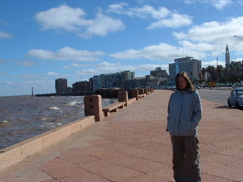 We stayed a week in the 1920s Hotel Cervantes, it was like something out of an Agatha Christie book. 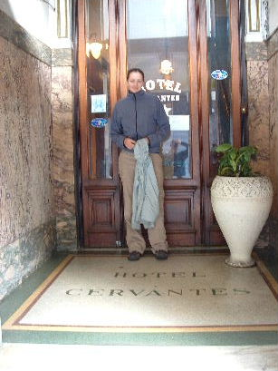 This is the Batman building on the plaza. It's probably called something else, but never mind. 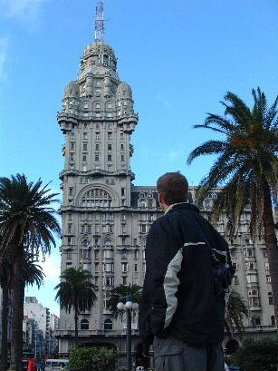 This is the view out over the Rio Plate Estuary and the Atlantic. The water of the Rio Plate has arrived here, mud-laden and slow, from many sources - Rio Parana over Iguazu Falls, Rio Paraguay through Asuncion from deep in the Brasilian jungle, and other sources from Salta in Argentina close to Chile, and near Potosi's 'Rich Mountain' in Bolivia. For the Spanish Conquistadors it was a vital link to the continent's interior; for Scotland '04+1 it is a thread linking back to many of the beautiful places visited. 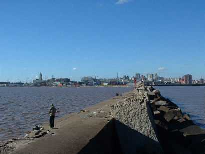 Artigas is the great Uruguayan hero. This statue on the plaza is above his impressive crypt. 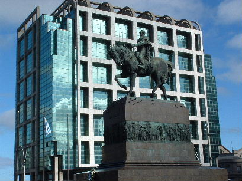 The city is undergoing a Dublin-docks style revamp, with some impressive buildings and a new railway station. 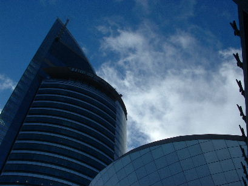 This is the entrance way to the now empty old railway station. The city, like the Team, continues to commemorate the great men of the steam railway era: James Watt and Catherine share a laugh... 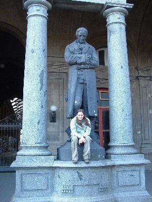 Robert Stephenson and Jim are altogether more sombre... 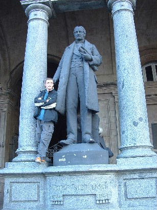 Some fine buildings in Montevideo, including this museum and its courtyard... 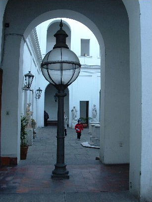 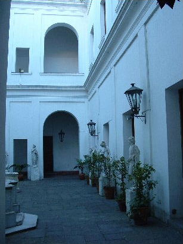 The Uruguayans share with the Argentinians a love of Tango. Not the place for Irish people to wander onto the dancefloor. 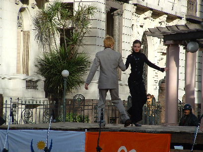 These guys were practising for an international competition. 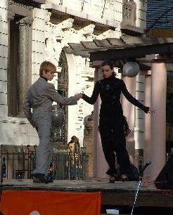 Going home is all too much to think about. 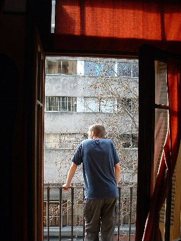 |
| Leaving Brasil, July 5, 2005. | ********************************************************************************************* With only 10 days remaining, it was time to start heading to Buenos Aires for a little necessary shopping and flights home. Between Brasil and Argentina, there lies Uruguay, so it was planned to spend a few days there ahead of the short ferry ride across the Rio Plate Estuary to Argentina. On the last day of travel in Brasil, there was yet more unexpected scenery in the sunshine country - flood-filled fields... 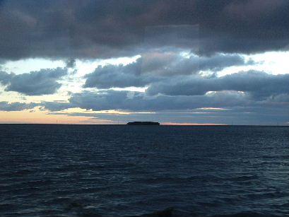 This went on for quite a while, all day in fact. 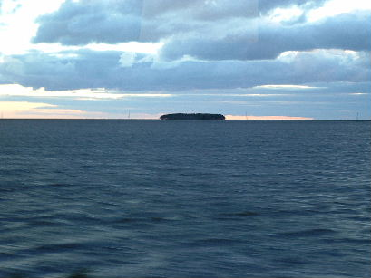 The border crossing for this particular route between Brasil and Uruguay is directly down the main street of the town of Chui. We waited for the bus to Montevideo, the Uruguayan capital, passing the time watching the traffic go by - uptown on the Uruguayan side, downtown on the Brasilian side. |
| Prawer Chocolate Factory, Gramado, Brasil, July 4, 2005. | ********************************************************************************************* On the day she should have been in Dublin graduating from her Masters, Catherine was instead celebrating with a trip to a chocolate factory. Two hours on the bus in the pelting rain to arrive at an appropriately chocolate-box German mountain village. Catherine's brother had been there ahead of her to organise the celebrations, but unfortunately thought that he was the one graduating. Not so, Tim, now get back to your PhD. 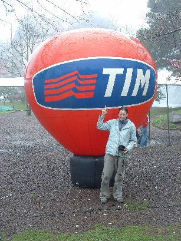 In Gramado, the people spoke Portuguese, but apart from that the team felt it could have been in the Bavarian Alps. The chocolate tour involved being ushered through the factory in about six minutes, being corralled by two Oompha Lomphas, one of which explained the entire process, in Portuguese. The team learned nothing about chocolate, but the free samples were good. Here's Catherine's official graduation photo: 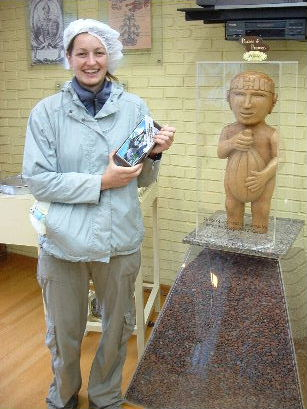 After that it was another two hours back to town on the bus, scoffing delicious chocolates all the way. Back at the bus station, the mystery of what Mr. Fred had been doing since departing the team was solved...
|
| Florianopolis, Brasil, July 3, 2005. | ********************************************************************************************* So we went to Brasil. This turned out to be a real exercise in tickbox tourism, as we raced through the place without really coming to grips with it. 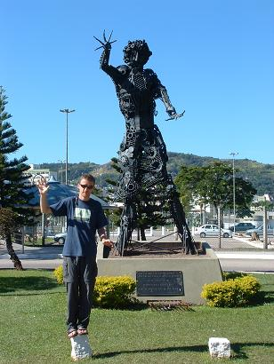 A non-standard trip into Brasil - the team saw exactly one person playing football in the street, nobody doing the samba, visited no beaches, and it rained and was cold all the time. Everybody else to whom we spoke, without exception, had a fabulous, sun-drenched time there. Brasil goes on the 'next time' list. 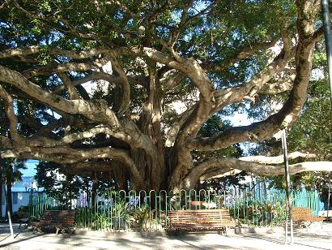 Not disrespecting Brasil, just saying we didn't have much of a chance to see too much of it. |
| Foz de Iguazu, Argentina, July 1, 2005. | ********************************************************************************************* Last big waterfall of the trip. In the last two weeks of the trip, the kayakers go to stand in awe of the mighty Iguazu. 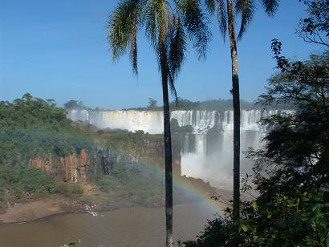 More geography: Rio Iguazu forms the border between Brasil and Argentina. Enough geography. This is the initial view from the Argentine side. Huge water, palm trees, complete circular rainbows, birds of paradise. 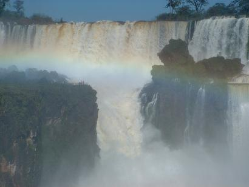 Kayakers have a bad habit of thinking they see a line, when there is no line. I've been guilty of this before, but not this time. We saw no line. For scale, you can see people on the viewing point on river right. The spray utterly drenches you at the mirador. Here's a closeup... 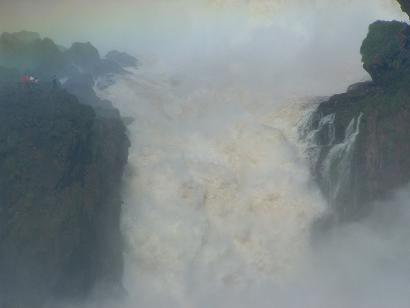 Utterly drenched... 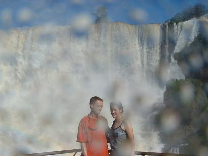 I'm not even trying to convey anything of the waterfall. This was yet another occasion on which the phrase 'I have never seen anything like this' comes to mind. With fantastic understatement, the Guarani phrase 'I-guazu' translates as 'Big Water.' 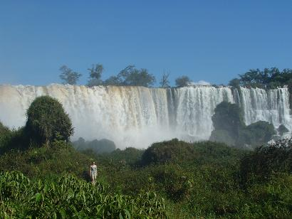 This is the top half of the far edge of the drier side. 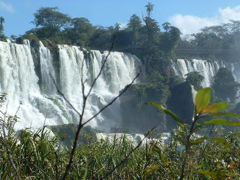 Even though there is no possible way you are going to get in a boat here, it still makes you ill just contemplating the what-if scenarios. The drop shown in the previous picture, here seen from above, is what kayakers might refer to as the horizon line from hell. 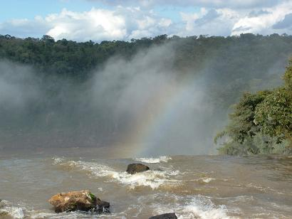 More... 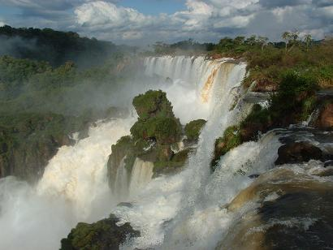 Further around towards the Brasilian side, the Devil's Throat is reached on a 1.1 km walkway over the river. This is where most of the water goes over, in a single drop. The bottom is permanently obscured by the mist. 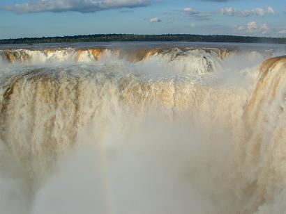 The viewing platform perches over the edge... 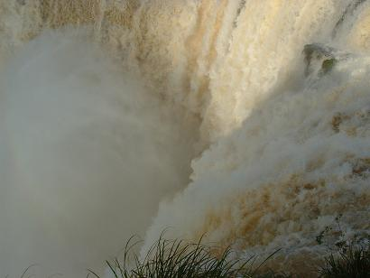 In kayaking terms, it's a straightfoward Grade II lead-in followed by a single drop, then a Grade II float out. Notice I said 'float out' not 'paddle out.' This is the old walkway, above the drop. Most of it was washed away in a flood ten years ago. 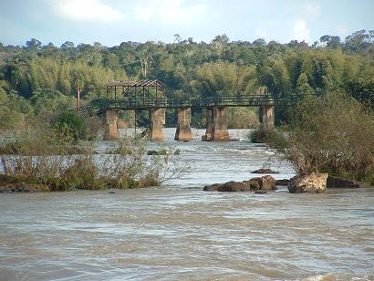 Here's the Brazilian side... 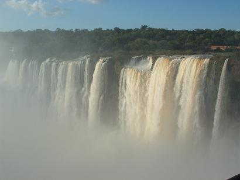 Enough, go see it yourself. 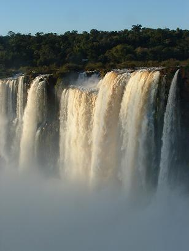 |